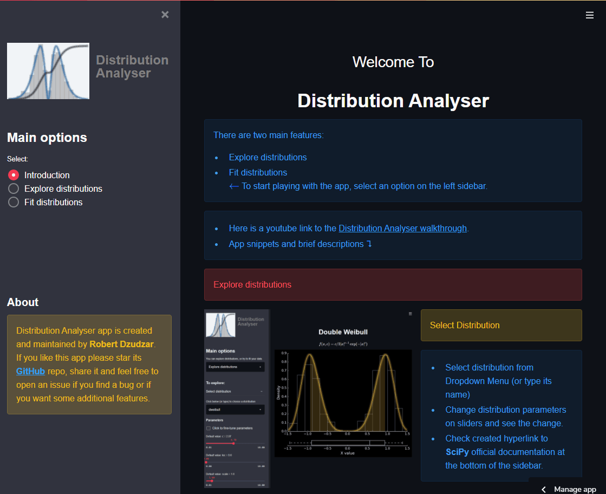

Distribution Analyser, a web application made with Streamlit
Distribution Analyser is a web application that allows you to interactively explore continuous distributions and fit distribution(s) to your data. Distribution Analyser is built using Streamlit., an open-source Python library for making custom web apps.Distribution Analyser is deployed via Streamlit Sharing, you can access it here.. The entire source code is available on my GitHub..
I have written two articles for Towards Data Science that are related to Distribution Analyser.
The first article is an overview of the app and you can read it here.
The second article is "How can we save time after an interactive Exploratory Data Analysis?" and you can read it here.
Main options
In “Distribution Analyser” v1.0 the main app options are: Explore distributions and Fit distributions.Explore distributions
Interactively explore continuous distribution functions from SciPy v1.6.1. This feature is excellent if users want to get familiar with a particular distribution. Through the interaction with distribution parameters, one can easily see how the distribution changes.
Select distribution and tweak its parameters

Tweak figure display

Fit distributions
Import your data and fit selected continuous distribution(s) to them. This feature is excellent if users want to quickly see how and which distributions fit to their data, allowing them to proceed with their data analysis with a narrowed down selection of the distributions.
Import and examine data
Fit distributions

—